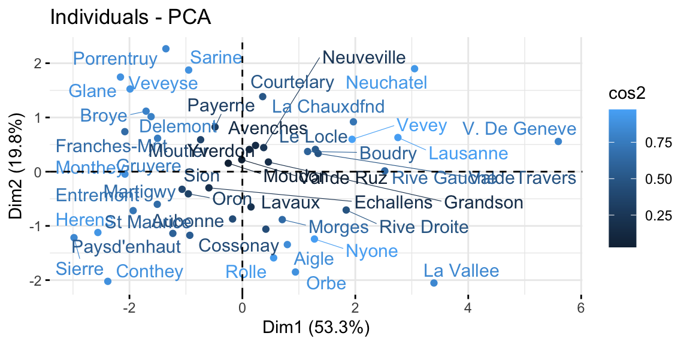
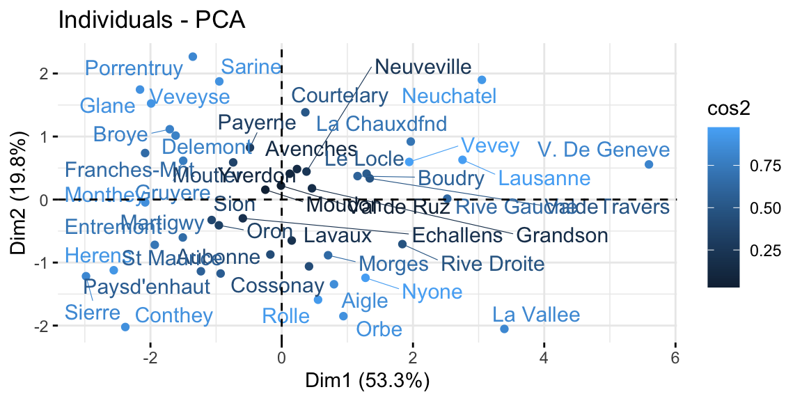

8.3 Principal Component Analysis
Principal Component Analysis (PCA) is a way of identifying patterns in data, and expressing the data in such a way as to highlight their similarities and differences Jolliffe and Cadima (2016). Since patterns in data can be hard to find in data of high dimension, where the luxury of graphical representation is not available, PCA is a powerful tool for analysing data. The other main advantage of PCA is that once we have found these patterns in the data, we compress the data (ie. by reducing the number of dimensions) without much loss of information.
The goal of PCA is to reduce the dimensionality of the data while retaining as much as possible of the variation present in the dataset.
PCA is:
- a statistical technique used to examine the interrelations among a set of variables in order to identify the underlying structure of those variables.
- a non-parametric analysis and the answer is unique and independent of any hypothesis about data distribution.
These two properties can be regarded as weaknesses as well as strengths. Since the technique is non-parametric, no prior knowledge can be incorporated. Moreover, PCA data reduction often incurs a loss of information.
The assumptions of PCA:
- Linearity. Assumes the data set to be linear combinations of the variables.
- The importance of mean and covariance. There is no guarantee that the directions of maximum variance will contain good features for discrimination.
- That large variances have important dynamics. Assumes that components with larger variance correspond to interesting dynamics and lower ones correspond to noise.
The first principal component can equivalently be defined as a direction that maximizes the variance of the projected data. The second will represent the direction that maximizes the variance of the projected data, given the first component, and thus it will be uncorrelated with it. And so on for the other components. Once we have computed the principal components, we can plot them against each other in order to produce low-dimensional views of the data. More generally, we are interested in knowing the proportion of variance explained by each principal component and analyse the ones that maximize it.
It is important to remember that PCA has to be performed on continuous scaled data. If the variables we want to analyze are categorical, we should use scaled dummies or correspondence analysis. Another fundamental aspect is that each row of the dataset must have a name assigned to it, otherwise we will not see the names corresponding to each observation in the plot. See Scaling data and Row Names for more information on the procedure.
Using the codes below, we are able to reduce the dimensionality in the
swiss dataset. This dataset presents only percentage values, thus all
the variables are already continuous and in the same scale. Moreover,
each observation (village) has its row named accordingly, so we do not
need to do any transformation prior to the analysis. One we are sure
about these two aspect, we can start our analysis by studying the
correlation between the different variables that compose the dataset. We
do so because we know the PCA works best when we have correlated
variables that can be “grouped” within the same principal component by
the algorithm.
The next step is to properly run the PCA’s algorithm and assign it to an
object. If the values are not on the same scale, it is better to set the
argument scale equal to TRUE. This argument sets the PCA to work on the
correlation matrix, instead of on the covariance matrix, allowing to
start from values all centered around 0 and with the same scale. The
object created by prcomp() is a “list”. A list can contain dataframes,
vectors, variables, etc… In order to explore what is inside of a list
you can use the $ sign or the [] (nested square brackets). The
summary and the scree plot (command fviz_eig() from the package
factoextra) are the first thing to look at because they tell us how
much of the variance is explained by each component (Kassambara and Mundt, n.d.). The
higher are the first components, the more accurate our PCA will be. In
this case, the first two components retain 73.1% of the total
variability within the data.
library(factoextra)
#running the PCA
pca_swiss <- prcomp(swiss, scale = TRUE)
summary(pca_swiss)
#visualizing the PCA
fviz_eig(pca_swiss)Figure 8.5: Screeplot.
The final step is to plot the graph of the variables, where positively correlated variables point to the same side of the plot, while negatively correlated variables point to opposite sides of the graph. We can see how Education is positively correlated with the PC2, while Fertility and Catholic are negatively correlated with the same dimension and thus also with Education. This result confirms what we already saw in the correlation matrix above.
The graph of individuals, instead, tells us how the observations (the villages in this case) are related to the components. Thus, we can conclude by saying that V. de Geneve has some peculiar characteristics as compared with the other villages, in fact it has the highest education level and lowest fertility and share of catholic people.
The biplot overlays the previous two graphs allowing a more immediate interpretation. However if we have many variables and observations, this plot can be do messy to be analyzed.
# Graph of variables
fviz_pca_var(
pca_swiss,
col.var = "contrib",
repel = TRUE # Avoid text overlapping
)
# Graph of individuals
fviz_pca_ind(
pca_swiss,
col.ind = "cos2",
repel = TRUE
)
# Biplot of individuals and variables
fviz_pca_biplot(pca_swiss, repel = TRUE) 

Figure 8.6: From top-left clockwise: Graph of variables, positive correlated variables point to the same side of the plot; Graph of individuals, individuals with a similar profile are grouped together; Biplot of individuals and variables.
As a robustness check, and also to better understand what the algorithm does, we can compare the rotation of the axis before and after the pca looking at the pairs plot. In the pair graph after the PCA we expect to see no relationship between all the principal component, as this is the aim of the PCA algorithm.
# Pairs before PCA
pairs(swiss, panel=panel.smooth, col="#6da7a7")
# Pair after PCA
pairs(pca_swiss$x, panel=panel.smooth, col="#6da7a7")Figure 8.7: From top: Pairs graph before PCA; Pairs graph after PCA.